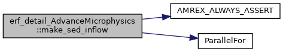
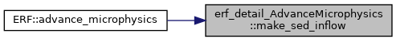
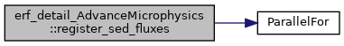
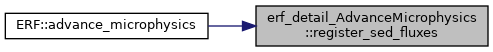

- Generated by
 1.9.1
1.9.1
|
ERF
Energy Research and Forecasting: An Atmospheric Modeling Code
|
Functions | |
| bool | make_sed_inflow (const BoxArray &ba, const DistributionMapping &dm, const Box &domain, const IntVect &rr, const SedimentationFlux &crse, Real dt_fine, MultiFab &inflow) |
| void | register_sed_fluxes (YAFluxRegister &fr, bool as_crse, const SedimentationFlux &sf, const MultiFab &cons, const MultiFab &mfx, const MultiFab &mfy, const Geometry &geom) |
| bool erf_detail_AdvanceMicrophysics::make_sed_inflow | ( | const BoxArray & | ba, |
| const DistributionMapping & | dm, | ||
| const Box & | domain, | ||
| const IntVect & | rr, | ||
| const SedimentationFlux & | crse, | ||
| Real | dt_fine, | ||
| MultiFab & | inflow | ||
| ) |
The inflow through the top of a fine level's patches for one Advance of length dt_fine (see ERF_SedimentationFlux.H), from the sedimentation flux crse its parent recorded over its own, enclosing, step. A patch-top face is a z-face at the top of a fine box with no fine cell above it and below the domain top; it gets the coarse flux through the coarse face it lies in, piecewise constant in x and y, in proportion dt_fine / crse.dt.
Returns false, leaving inflow alone, when every box reaches the domain top.
Referenced by ERF::advance_microphysics().


| void erf_detail_AdvanceMicrophysics::register_sed_fluxes | ( | YAFluxRegister & | fr, |
| bool | as_crse, | ||
| const SedimentationFlux & | sf, | ||
| const MultiFab & | cons, | ||
| const MultiFab & | mfx, | ||
| const MultiFab & | mfy, | ||
| const Geometry & | geom | ||
| ) |
Add a level's sedimentation fluxes to a flux register, as the coarse level (as_crse) or the fine one, so that Reflux replaces the flux a coarse cell next to a fine patch saw through their shared z-face with the fine level's. Below a patch that stops short of the ground, that hands the patch's outflow to the coarse cell under it; at a patch top the fine flux is the coarse one (make_sed_inflow), so nothing changes there.
The register works with the advective form d(rho q)/dt = -(m^2/detJ) dF_z/dz on the computational grid, so the downward amount D per unit area over sf.dt is registered as F_z = -D / (sf.dt m_x m_y). Sedimentation has no x or y flux.
Referenced by ERF::advance_microphysics().

